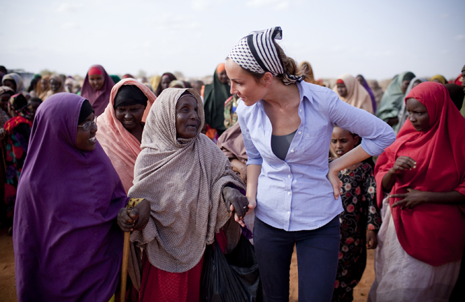
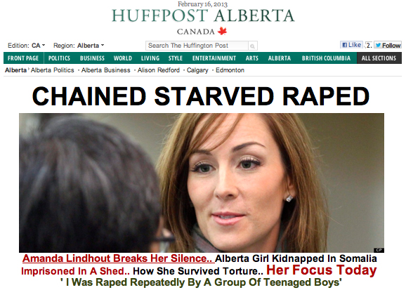

پذيرش > سایت نوشته ها > روایت بازمانده یک تجاوز جنسی، از فروپاشی تا ایستادگی


 روایت بازمانده یک تجاوز جنسی، از فروپاشی تا ایستادگی روایت بازمانده یک تجاوز جنسی، از فروپاشی تا ایستادگی
21 خرداد 1392 - لیلا اسدی - نسخه قابل چاپ
برای قهرمان بودن حتما لازم نیست راهی را رفت که نلسون ماندلا یا آنگ سان سوچی طی کردند. برای قهرمان بودن کافی است مقاومت کرد در برابرهر چه که بودنت را نشانه گرفته است. کافی است در برابر ساختاری که تو را تا حد یک شیئ لذت آور یا وسیله ای برای فرونشاندن خشم، هیجان یا انتقام تقلیل می دهد، نشکست، کافی است تا در برابر صداهایی که در بیرون از تو به نحو چندش آوری تو را دستمایه اهداف خود قرار می دهند، ایستاد. تنها لازم است بگویی نه! در مقابل آنچه که هویت تو را نشانه گرفته است چه آن فرد متجاوز به تو باشد و چه گزارشگر بی عاطفه یک رسانه. حتی بعد از15 ماه مداوم مورد تجاوز قرار گرفتن و بیشتر. در شرایطی که شکستن تو برای همه قابل قبول می شود و همه منتظرند که لباس قربانی بر تن تو پوشانده شود. اما کافی است بایستی تا قهرمان شوی برای آنهایی که سرنوشتی مشابه تو را سپری کرده اند، آنها که شکسته اند یا آنها که در مرز فروپاشی اند اما هنوز می خواهند بایستند.
گفتن و نوشتن از تجاوزجنسی آسان نیست چه برسد به تجربه کردن آن. تجاوز تنها یک کلمه نیست که یک عمل به شدت وحشیانه است. تقلیل دادن تمامیت یک زن، یک انسان به حتی کمتر از حیوان است. اما باز هم این ها نیست. تجاوز شکستن چرخه طبیعی یک زندگی است که اگر بازماندهاش زنده هم بماند، لحظه هایی را به اندازه تمام زندگی با کابوس های بعد از آن سپری می کند. با این همه در مقایسه با سایر جرائم، تجاوز جنسی همیشه با مشکل گزارش نشدن Underreport روبروست که برقراری عدالت جنسیتی را دشوار می سازد و از همین روست که پرونده های تجاوز جنسی در محاکم بین المللی هم که به طور خاص دنبال تحقق عدالت در موارد استفاده از تجاوز جنسی به عنوان یک استراتژی هستند، همچنان برای سال های سال باز می مانند. نمونه هایش فراوانند از تجاوز به زنان بنگلادشی در سال 1974 گرفته تا زنان و دختران در کنگو، مکزیک، برمه، کره شمالی، بوسنی، رواندا، سودان، لیبی و همین اواخر در سوریه. اما سویه دیگر تجاوز، قربانی سازی است چیزی که رنج اش ممکن است بیشتر از کیفر نشدن مجرم برای بازمانده آن باشد. داغی بر پیشانی بازمانده جرم گذاشته و در بهترین شرایط به حال خود رها می شود. در غیر اینصورت یا از ترس آبرو کشته می شود یا خودکشی می کند و یا مانند آنچه در لیبی این روزها اتفاق می افتد، شوهر داده می شود تا بتواند ظاهرا از گزند نگاه های آزار دهنده رهایی یابد. و هنوز یک واقعیت تلخ همیشه با تجاوز جنسی همراه است اینکه زنان نمی خواهند حرف بزنند که از عواقب بیشتر آن می ترسند. بنابراین کار با بازماندگان تجاوز آسان نیست که باید در آن همه ابعاد اجتماعی، فرهنگی، سیاسی و فردی را در نظر گرفت. همچنان که نوشتن از تجاوز نیز ساده نیست که مبادا شخصیت بازمانده آن زیر بار بیرحم کلمات دوباره خرد شوند. کلماتی که ما سهل انگارانه یا فرصت طلبانه صرفا در کنار هم قرار می دهیم شان.
اما چطور می شود که بازمانده یک تجاوز جنسی برای بیش از 15 ماه باشی و بیرون که آمدی نخواهی نقش یک قربانی یا بازمانده را بازی کنی. به نظر دشوار اما شدنی است. کسی هست که توانسته این کابوس را بشکند.
آماندا لیندوت- Amanda Lindhout- خبرنگار کانادایی در سال 2008 به سومالی سفر کرد تا از جنگ و خشونت به روایت پناهندگان ساکن در کمپ ها بنویسد اما در راه بازگشت توسط چند نوجوان سومالیایی همراه با دیگر همکارانش ربوده شد و 462 روز را با شکنجه، آزار و تجاوز سپری کرد. زمانی که آزاد شد بنیادی را به نام Global Enrichment تأسیس کرد، یک برنامه بازتوانی به نام کاروان امید را در جنوب سومالی راه انداخت تا نیازهای اولیه دو میلیون زن، مرد و کودک را تِأمین کند و برای توسعه و صلح برنامه ای را به نام "She will "مدیریت کرد تا بازماندگان تجاوز جنسی را تحت پوشش قرار دهد. تنها به این دلیل که او خود داستانی دست اول از تجاوز جنسی داشت.
کار عجیبی که کرد این بود که نخواست با رسانه هایی که در کمین شنیدن جزئیات شکنجه و تجاوز شدن او نشسته بودند تا برای مخاطبانشان گزارش های آبدار بنویسند، مصاحبه کند. او می گوید: «هیچ وقت احساس تعهد نکردم تا جزئیات آنچه بر سرم آمد را برای رسانه ها بازگو کنم. فقط کافی بود بگویم یک آزار غیرقابل تصور. همین و بعد بر توانبخشی خودم متمرکز شدم.»اما این آزار غیرقابل تصور به زنجیر کشیده شدن، گرسنگی، نگه داشته شدن در قفس حیوانات و ماندن در تاریکی مطلق بود. با این همه بعد از آزادی تلاش کرد تا به عنوان یک بازمانده برچسب آزار جنسی دیده را با خود یدک نکشد.
او انتخاب کرد تا ساکت باشد و جزئیات رنجی را که تحمل کرده بود با صرفا بیان عبارت شکنجه یا تجاوز بازگو نکند. به جای آن تلاش کرد تا بر ساختن زندگی اش تمرکز کند و ایجاد دنیایی که می خواست در آن زندگی کند. در همان زمانی که رسانه ها تنها برای جلب مخاطب بیشتر از روزهای وی داستان می ساختند تا دوباره قربانی اش کنند. می خواستند بدانند چطور و چند بار به او تجاوز شده است. اما به نظر آماندا این جزئیات غیرضروری بودند. تنها 3 سال بعد در فوریه 2012 با حضور در کمپین One Million Rising افشا کرد که چطور شکنجه می شده است و تنها در آنجا بود که از اصطلاح تجاوز نام برد و اضافه کرد که: «سپری کردن یک زمان طولانی در سومالی به من فرصت داد تا با یک دید وسیعتر به خشونتی که بر زنان می رود واقف شوم. در آنجا بود که شیوه وحشیانه برخورد با زنان را دیدم که چطور طی آن بی ارزش و نابرابر نگریسته می شوند. چیزهای زیادی را تجربه کردم در طول 15 ماه و نیم. گرسنگی، انزوا، انواع متفاوت آزار. اتاقی که در آن نگاه داشته می شدم آنقدر سیاه و تاریک بود که حتی دستهای خودم را هم نمی توانستم ببینم. تکان نمی توانستم بخورم چرا که به پاهای من زنجیر بسته شده بود با گوی های آهنی که هنوز دردشان تا امروز برایم باقی مانده است. من همه چیزم را از دست داده بودم، خانواده ام، آزادی ام، توان حرکت و حتی نور خورشید را.»
«مردم بعضی اوقات می پرسند سخت ترین شکنجه ها چه بود در حالی که برایم امکان پذیر نیست که انتخاب کنم. مورد تجاوز قرار گرفتن چیزی است که احساس کردم برای همیشه مرا تغییر داد. اولین باری که به من تجاوز شد فکر کردم خطی روی ماسه ها کشیده شد، بین زندگی ام قبل از تجاوز و بعد از آن. مهم نیست چند بار اتفاق افتاد. مهم این است که هیچوقت شرایط بهتر نشد. وقتی از او پرسیدند آیا باز هم اصرار دارد که نگوید مورد تجاوز قرار گرفته است، گفت من تنها این کلمه را به عنوان بخشی از تجربه ام از آن خودم کردم.»

و هنگامی که گزارش صحبت هایش به صورت ناشیانه ای در روزنامه The Huffington Postکانادا چاپ شد، گفت تقلیل دادن این رنج به صرفا گفتن تجاوز، وحشتناک و ناشی از بی حسی و بی عاطفه بودن است. نمی خواهم رسانه ها به آنچه که نباید باشد بیشتر از حد توجه نشان بدهند. برداشت من نسبت به واژه تجاوز به خاطر آن نیست که از گفتن آن شرم دارم به خاطر آن است که من فقط یک زن، یک گروگان سابق، کسی که ربوده شد، مورد تجاوز قرار گرفت و شکنجه شد، نیستم. صرفا استفاده از این کلمه است که نابودم می کند. تجاوز هویت من نیست. چیزی است که برای من اتفاق افتاده است. اما من آماندا لیندوت هستم. من بازمانده تجاوزم و توانستم در زیر شکنجه زنده بمانم.
آنچه آماندا با رفتار خود نشان داد، مقابله با قربانی شدن دوباره در هجوم رسانه ها بود. در شرایطی که تجاوز همچنان با مشکل گزارش نشدن روبروست، شاید بعضی بگویند سکوت آماندا به نوعی تداوم رفتاری بوده است که در قربانیان این عمل حیوانی باید تغییر کند تا بتوان متجاوزان را شناخت و مجازاتشان کرد. اما سکوت او به معنای شرم و پذیرش شکست نبود بلکه گریز از رنج بیشتری بود که می توانست وی را تا سرحد یک بازمانده ناتوان با نهادن داغ قربانی بر پیشانی اش تقلیل دهد. تجاوز جنسی و ٍآثار وحشتناک آن چیزی نیست که بتوان در برابر آن سکوت کرد اما سکوت آماندا اعتراضی فعال در برابر قربانی شدن دوباره بود. از همین رو بود که آماندا دوباره برخاست تا متروکه ای را به ویرانه تبدیل کند اما آرام و صبورانه.
 برای اطلاع از جزئیات بیشتر زندگی آماندا لیندوت می توانید به سایت زیر مراجعه کنید: برای اطلاع از جزئیات بیشتر زندگی آماندا لیندوت می توانید به سایت زیر مراجعه کنید:
http://www.womenundersiegeproject.o...
تا قانون خانواده برابر
ارسال به
بالاترین
،
توییتر
،
فریندفید
،
فیسبوک
در همين بخش :
 یک خبر تلخ؟ یک قانونشکنی؟ یک تصمیم بخشنامهای جدید؟ یک خبر تلخ؟ یک قانونشکنی؟ یک تصمیم بخشنامهای جدید؟
چرا بایست به سکسوالیته پرداخت؟ / نفیسه آزاد
آزارجنسی خانگی؛ «قربانی» نه، «نجات یافته»
زنان، بزرگترین بازندگان بهار عرب
سانسور از دیدگاه جنسیتی/الهه امانی
ديگر بخش ها :
طرح یک میلیون امضا
|
مقالات
|
سایت نوشته ها
|
اخبار
|
گزارش كمپين
|
گفت و گو
|
علیه سکوت
|
كوچه به كوچه
|
نامه های شما
|
گزارش ویژه
|
گفتگو با اعضا
|
ویژه سالگرد کمپین
|
تصویر برابری
|
دل آرام علی
|
تریبون
|
مقالات
|
تاریخ شفاهی
|
خارج از چارچوب
|
کتابخانه
|
درباره کمپین
|
کمپین در شهرها
|
کمپین در بند
|
صدای تغییر
|
ویژه 22 خرداد
|
لایحه حمایت از خانواده
|
گالری
|
عشا مومنی
|
امیر یعقوبعلی
|
خدیجه مقدم
|
راحله عسگری زاده و نسیم خسروی
|
پروین اردلان،جلوه جواهری، مریم حسین خواه، ناهید کشاورز
|
زینب پیغمبرزاده
|
سعیده امین، سارا ایمانیان، محبوبه حسین زاده، ناهید کشاورز و همایون نامی
|
احترام شادفر
|
نسیم سرابندی زاده،فاطمه دهدشتی
|
وبلاگ مهمان
|
پرونده خرم آباد
|
دستگیری ها
|
مریم مالک
|
پرستو اللهیاری
|
مهرنوش اعتمادی
|
سمیه رشیدی
|
Other Languages
|
همراهان
|
«فراخوان کمپین ده روز با بهاره هدایت»
| English
|